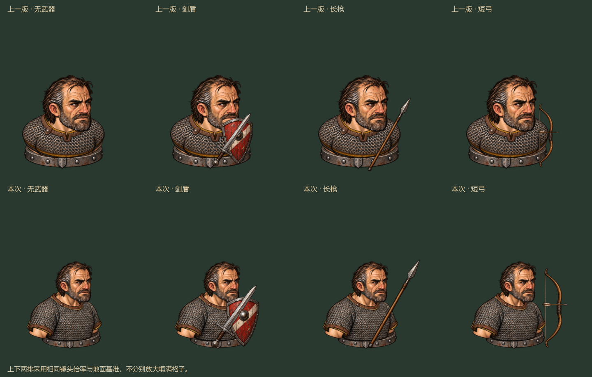
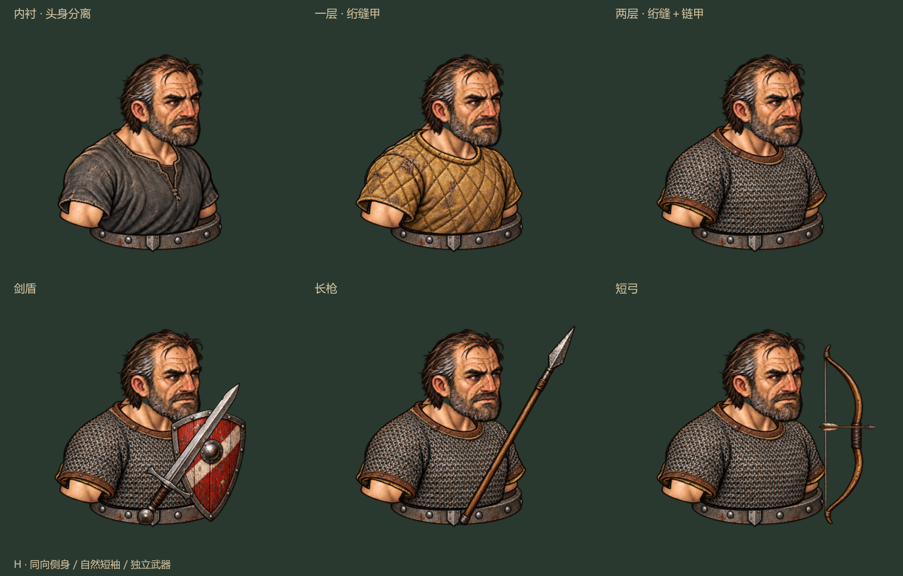
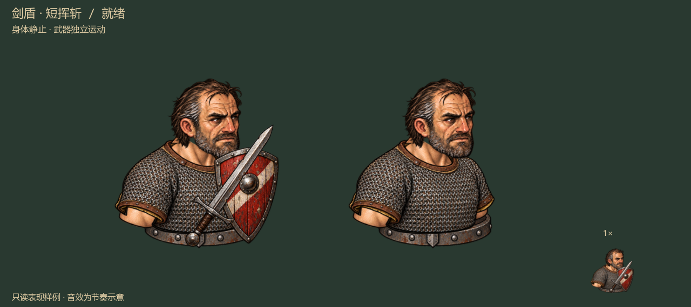
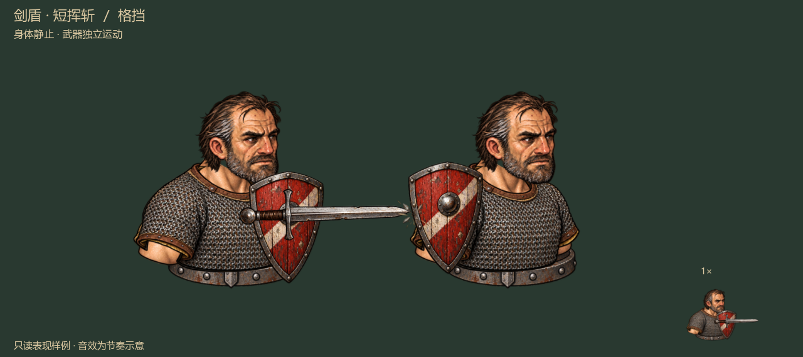
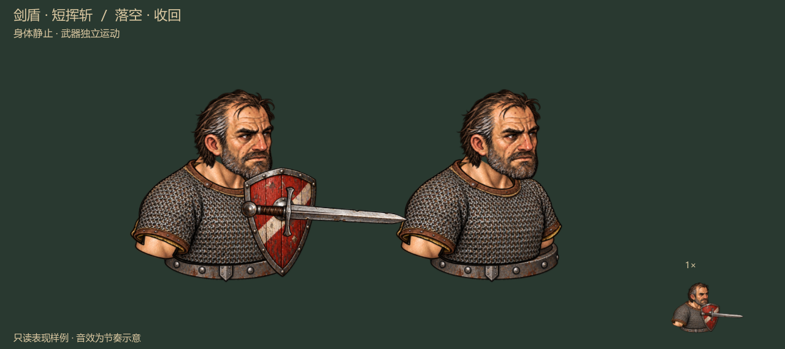
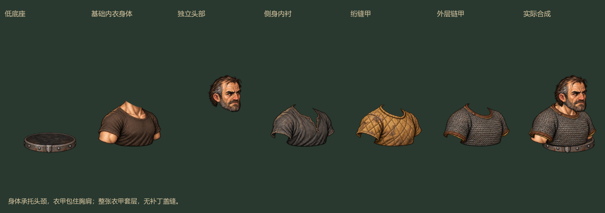
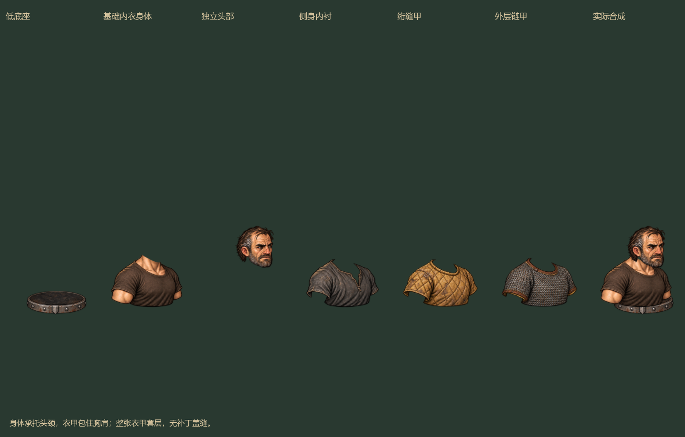

FANTASY BROTHERS / ART REVIEW · 2026.09.20
H · 侧身与比例修订
头肩同向 · 自然短袖 · 轻底座 · 更清楚的武器一人 / 两甲 / 三类武器
本页为 Windows 实机帧回放
交互与示意音效：运行 Review-Static-Bust.cmd

上排是上一版，下排是本次修订。同一镜头倍率：头部缩小、肩胸转向、保留短上臂，底座减轻、武器放大。可切换其他标签检查实际穿戴与动作。

上排检查穿戴，下面检查武器比例。脸部受伤和装备破损在实机中可以分别切换。

头、胸和衣甲静止；剑短挥、枪前刺、箭矢离弦，目标作为完整棋子短促后退。右下角为 1× 尺寸。
格挡：目标保留完好甲。
落空：没有命中效果或甲损。
头部与身体分开。肩胸和面容朝同一侧，短袖自然下垂，大臂略伸出底座两侧。头部伤势和材质破损采用独立原画。
基础身体穿素色贴身内衣，提供颈根和短上臂；外层衣甲独立叠加。
本次沿用已认可的静态穿戴与武器节奏，修订比例与侧身构图；尚未覆盖完整人物库、多朝向、倒伏和死亡资产。样板待你评审。范围与来源 · 验证记录 · 生成提示词 · 上一版